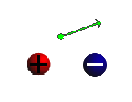

Instructions
This page is designed to get you started using the applet. The applet should be open. The step-by-step instructions on this page are to be done in the applet. You may need to toggle back and forth between instructions and applet if your screen space is limited.
 Field Points and Field Vectors
Field Points and Field Vectors
 Field Lines and Equipotential
Lines
Field Lines and Equipotential
Lines

Exercise 1. RESET  the applet.
the applet.
Click somewhere in the applet window. A green dot should appear at the point where you clicked. This is a field point. A green arrow attached to the field point may be visible as well. See Figure 1 in Exercise 4 below for an illustration.
Whether or not a green arrow is visible depends on the magnitude of the electric field at the given field point. If the magnitude is too small, the arrow is correspondingly small and invisible. The magnitude of the field vector at a given point depends on how close the field point is to either one of the two source charges (red or blue ball).
Drag either one of the source charges towards or away from the field point and observe the changes in the field vector.
Exercise 2. RESET the applet.
Click somewhere in the applet window, but this time drag the field point around the window before releasing the mouse button. You should be able to observe how the field vector varies in magnitude and direction depending on the location of the field point.
Note that the applet is designed so that a field point cannot be moved inside one of the source objects. Neither can the source object be dragged over a field point. Try it!
Exercise 3. RESET the applet.
Click in the applet window and drag the field point to a position where the arrow representing the field vector just disappears. The Vector Length Scale slider should still be at its minimal default setting. Move the slider tab to the right. The field vector arrow should become visible and be increasing in length as the slider setting goes to a larger scale.
Exercise 4. RESET the applet.
Move the two source objects reasonably close together, and select a field point not too far from and somewhat in between the sources, as in Figure 1 below. Use the charge sliders to set Q1 = 25 C and Q2 = -25 C. If necessary, increase the setting of the Vector Length Scale slider to get an arrow of good length.

Figure 1
Without changing the field point, vary Q1 and then Q2, through their entire ranges from -50 to 50. Observe how the field vector direction rotates when the charge values are varied.
Exercise 5. Repeat Exercise 4, but this time select
the Components button  so that the individual field vectors due to the
two source charges are shown in addition to the total field
vector, which is shown in green. Figure 2 below shows an
example of what you might see.
so that the individual field vectors due to the
two source charges are shown in addition to the total field
vector, which is shown in green. Figure 2 below shows an
example of what you might see.

Figure 2
Observe how only one of the individual vectors changes as the value of one of the source charges is changed. Observe that the color of the individual vectors matches the color of its source.
Exercise 6. Without resetting the applet, click a few more times in the applet window so that you get a few more field points and field vectors. All field points and field vectors will be shown in grey, except for the last field point and vector in green.
Vary the settings of both Charge sliders throughout their ranges. Observe the changes in the field vectors. Do the same with the Vector Length Multiplier slider settings.

RESET the applet.
Exercise 1. Move the source objects reasonably close together, as in Figure 3 below, and click in the applet window to set a field point somewhere in between the two sources.
Click the Field-Line button  to draw a green field
line through the field point, and click the
Equipotential-Line button
to draw a green field
line through the field point, and click the
Equipotential-Line button  to draw a red
equipotential line through the field point. The equipotential
"lines" are actually loops surrounding one of the source
charges.
to draw a red
equipotential line through the field point. The equipotential
"lines" are actually loops surrounding one of the source
charges.
Drag the field point to another positon, and again draw the field line and equipotential line through this point. Repeat this for one or more points. Depending on where the field point is located when the field lines and equipotential lines are drawn, you might get something like the image in Figure 3 below.

Figure 3
Exercise 2. Without resetting the applet, drag the green field point in two ways:
Observe the direction of the field vector. It should always be along an electric field line and always be perpendicular to an electric potential line. You may need to increase the Vector Length Scale slider setting to get a large enough vector arrow.
Exercise 3. Repeat Exercises 1 and 2 when both source charges are positive, say, both equal to +25.
This time the electric field lines should "repel" each other and not go from one source object to the other. Depending on the field point chosen, the equipotential line through that point will either loop around only one of the two source charges or around both of them.
Exercise 1. RESET the applet.
Select the Field-Grid-Point button  , and drag the two sources
so that they are both roughly centered between four
neighboring grid points. You should see something like the
image in Figure 4 below. Adjust the setting of the Vector
Length Scale slider if necessary.
, and drag the two sources
so that they are both roughly centered between four
neighboring grid points. You should see something like the
image in Figure 4 below. Adjust the setting of the Vector
Length Scale slider if necessary.

Figure 4
The grid is an array of grey field points. There are no charges located at these points. The purpose of the grid is to make it easy to observe the electric field due to the source charges at a large number of field points.
Exercise 2. Repeat some of the earlier exercises with the grid displayed. Here are some suggestions.
Note that the applet is designed so that a source object cannot be dragged over a grid point or other field point selected by you.
Exercise 3. Continue with the state of the applet as
in Exercise 2, and don't click Reset. Instead, click REWIND
 . This should
remove the grid, any extra field points, and any field and
equipotential lines. It should not change the slider settings
and the positions of the source charges.
. This should
remove the grid, any extra field points, and any field and
equipotential lines. It should not change the slider settings
and the positions of the source charges.
Exercise 1. RESET the applet.
Click in the area between the two source charges to set a field point with field vector, and set the Vector Length Scale slider to a setting where you get a well sized arrow.
Set the Q1 slider to, say, Q1 = 50 and leave the Q2 slider at Q2 = -25. Then check the Simulate-Dipole-System checkbox .
Both Q values will be reset so that they have the same magnitude and opposite sign. The field vector will be adjusted accordingly.
Now change the charge on one of the Charge sliders, say, Q1. You should see two things happening:
These changes are such that the magnitude |Q1|a of the dipole moment of the two source charges remains constant where a is the distance between the charges from center to center.
Exercise 2. Make no changes in the applet's settings. In particular, keep the Simulate-Dipole-System checkbox checked.
Move either one of the source charges. Observe that the two charge sliders have their settings adjusted automatically so that Q2 = -Q1 at all times and so that |Q1|a remains constant.